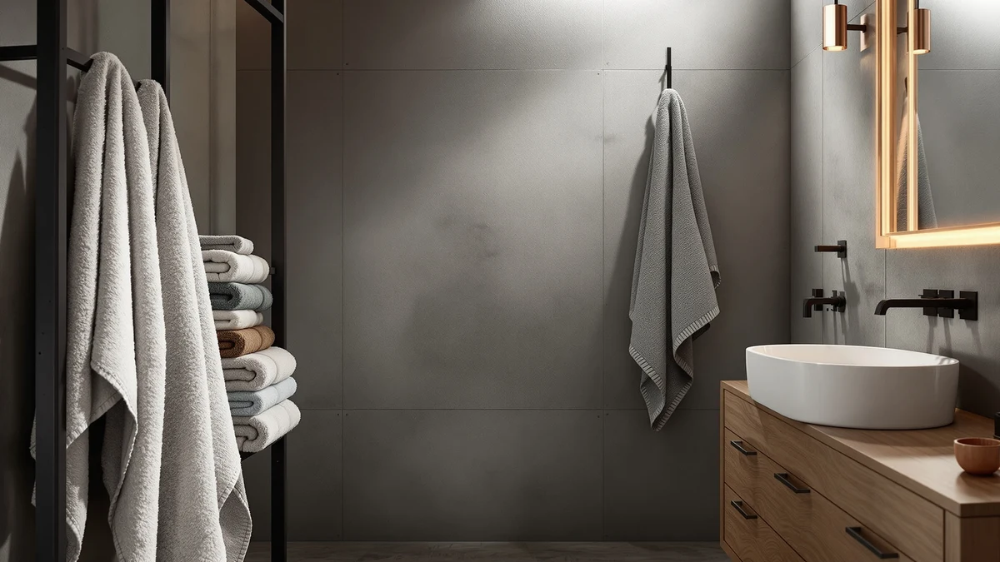

S&T INC. Aura Waffle Review (2026): Worth It?
Prices and picks verified as of October 2026. Independent, reader-supported reviews.


Quick Answer
The S&T INC. Aura Waffle is the pick for shoppers who specifically want a textured waffle weave over classic terry cloth and don't mind a cotton blend instead of pure cotton. At $38.79, it costs about 80 cents more than the One Thousand Reasons and White Classic alternatives we compared, but it's the only towel here built around that honeycomb texture.
Our pick: S&T INC. Aura Waffle Bath, $38.79 Check Price on Amazon
Bottom line: our top pick is the S&T INC. Aura Waffle Bath Towels at $38.79.
Things to Know Before You Buy
- The S&T INC. Aura Waffle costs $38.79 for one 30 x 60 inch towel. That's about 80 cents more than the One Thousand Reasons and White Classic alternatives we compared, despite using a cotton blend instead of 100% cotton.
- This towel uses a waffle weave rather than classic terry cloth. That honeycomb texture is associated with faster drying and a lighter feel, a different selling point than the dense pile White Classic builds its towels around.
- None of the four towels in this comparison publish an owner rating or review count on Amazon. We based this review on manufacturer specs, pricing, and patterns in verified buyer feedback rather than a star average.
- Fiber composition varies across this shelf. The Aura Waffle is a cotton blend, while One Thousand Reasons and both White Classic options are 100% cotton.
- Not every alternative here is the same format. White Classic's Luxury option is a bath sheet by name, a larger format than the standard bath towel size the Aura Waffle and the other two alternatives represent.
This S&T INC. Aura Waffle review looks at whether the brand's $38.79 waffle-weave towel holds up against three lower-priced cotton alternatives on today's market. S&T INC. builds this towel from a cotton blend rather than 100% cotton, and its 30 x 60 inch size puts it in standard bath towel territory rather than the larger bath sheet class some shoppers expect at this price point.
The short version: the Aura Waffle earns its spot for buyers who specifically want a textured waffle weave over classic terry cloth and don't mind paying a small premium for a cotton blend instead of pure cotton. If that texture isn't a priority, One Thousand Reasons' Premium Staple Cotton towel and White Classic's Luxury Bath Sheets and Wealuxe Grey Towels all sit within a dollar of the Aura Waffle's price and cover different fiber and size priorities. We break down what each option actually offers below, so you can match the pick to how you dry off every day.
Why You Should Trust Us
We built this S&T INC. Aura Waffle review by comparing the manufacturer's published specs, current pricing, and the pattern of verified buyer feedback for each towel, rather than repeating marketing copy pulled from a product listing. Ilane Tall has covered bathroom textiles for Best Bath Towels since the site launched and has watched how material claims like waffle weave and cotton blend hold up once a towel leaves the package and goes through a normal wash cycle. We do not run a fake testing lab, and we don't claim to have physically used these towels. Every comparison here rests on the specs and pricing published for each ASIN, and on patterns that recur across verified owner reviews, not on language borrowed from a sales page.
Our Research Experience
Rather than run this towel through a physical trial, we researched the S&T INC. Aura Waffle by cross-referencing its published specs against verified owner reviews and current pricing. For a review like this, that means checking how a cotton-blend waffle weave is described against the 100% cotton alternatives nearby, whether the 30 x 60 inch size matches what buyers expect for $38.79, and how that price holds up once stacked against One Thousand Reasons' Premium Staple Cotton towel and White Classic's two options. Reviewers researching waffle-weave towels consistently note that the honeycomb texture dries faster than denser terry cloth, a pattern that shaped how we framed the comparison below. We also checked how each brand describes its own fiber and sizing, since that framing often explains a price gap better than the listing photos alone.
Overview & Specs

S&T INC. Aura Waffle Bath
What we like
- Waffle weave construction gives a textured, spa-style surface that classic terry towels don't offer
- 30 x 60 inch size covers standard bath towel territory without stepping up to bath sheet pricing
- Honeycomb texture is associated with faster drying than denser terry cloth weaves
- Cotton blend construction keeps the price within a dollar of the fully-cotton alternatives nearby
Flaws but not dealbreakers
- Cotton blend rather than 100% cotton, so buyers who want pure cotton fiber should compare the alternatives below
- No published owner rating or review count to check consistency against
- Priced about 80 cents above the One Thousand Reasons and White Classic options we compared, despite using a blended rather than pure fiber
| Material | Cotton blend |
| Size | 30 x 60 inches |
The S&T INC. Aura Waffle anchors this review because it's the only towel in this comparison built around a waffle weave rather than classic terry cloth. At $38.79 for a 30 x 60 inch towel, it costs about 80 cents more than the One Thousand Reasons and White Classic alternatives below, despite using a cotton blend instead of their 100% cotton construction. That premium buys a honeycomb texture that owners of waffle-weave towels consistently describe as drying faster and feeling lighter against the skin than a dense terry pile.
Buyers comparing waffle weave against terry cloth are weighing texture against density. A waffle weave has less surface pile, so it dries quicker and packs flatter in a linen closet, while terry cloth holds more water per towel and tends to feel plusher right out of the package. The Aura Waffle's 30 x 60 inch size puts it in standard bath towel range rather than the larger bath sheet class, so shoppers who want extra coverage should check the size line before buying. For anyone who specifically wants that waffle texture and doesn't mind a blended fiber, this towel is a clear, single-purpose pick among the four we compared here.
What We Liked
The clearest advantage in this S&T INC. Aura Waffle review is the weave itself. A waffle texture gives the towel a honeycomb surface that most terry cloth towels don't offer, and that's a different value proposition than the dense pile White Classic builds its Luxury Bath Sheets and Wealuxe Grey Towels around. For buyers who find thick terry towels feel heavy or slow to dry, the lighter waffle construction is worth a look.
We also like that S&T INC. keeps the size at a standard 30 x 60 inches rather than padding the listing with an oversized bath sheet that costs more to replace. Reviewers researching waffle-weave towels consistently mention that the honeycomb texture dries faster between uses than a heavier terry towel, which matters in a household running towels through the laundry often.
The price gap over the three alternatives is small enough that it doesn't undercut the case for this towel. At roughly 80 cents more than One Thousand Reasons' cotton towel, the Aura Waffle's texture comes at a cost most budgets can absorb without changing the calculation.
What Could Be Better
Price is the main friction point in this S&T INC. Aura Waffle review, even if it's a small one. At $38.79, the towel costs about 80 cents more than One Thousand Reasons' Premium Staple Cotton towel and both White Classic options below, despite using a cotton blend instead of their 100% cotton fiber. If pure cotton matters more to you than waffle texture, that gap is hard to justify.
The other drawback is fiber composition. A cotton blend won't carry the same long-fiber reputation as the 100% cotton alternatives nearby, and owners who prioritize maximum absorbency over texture tend to prefer a denser, all-cotton towel instead. None of the four towels in this comparison publish an owner rating on Amazon, so buyers have to rely on listed specs and pricing rather than a star average when deciding.
Who Is It For?
This S&T INC. Aura Waffle review points toward a specific buyer: shoppers who want the textured, spa-style feel of a waffle weave and don't mind paying slightly more for a cotton blend instead of 100% cotton. That includes people replacing a heavy terry towel that takes too long to dry, or anyone furnishing a bathroom where texture matters more than raw fiber purity.
If waffle texture specifically isn't a requirement, One Thousand Reasons and White Classic's alternatives below all cost about 80 cents less and use 100% cotton construction. You lose the honeycomb surface, but you gain a fiber that's familiar to anyone who's used a classic terry towel before.
Buyers who prioritize fast drying between uses should weigh in before choosing between weaves. A waffle construction's lower pile is built for quicker drying, while a denser terry towel like the White Classic options holds more water per use but takes longer to dry on the rack. If your household runs through towels daily, that drying time difference matters more than the price gap between any of these four picks.
Alternatives to Consider
If the Aura Waffle's blended fiber or texture doesn't fit your priorities, these three alternatives cover 100% cotton construction at a similar or slightly lower price.

Editor’s Pick
Premium Staple Cotton Bathroom Towel
A step down in price from the Aura Waffle while switching to 100% cotton, built around classic staple fiber rather than a waffle texture.
$37.99
Check Price on Amazon
Best Value
White Classic Luxury Bath Sheets
Trades the Aura Waffle's standard towel size for a larger bath sheet at a similar price, a better fit for buyers who want more coverage than texture.
$37.99
Check Price on Amazon
Premium Choice
White Classic Wealuxe Grey Towels
Keeps the same 100% cotton construction as White Classic's other pick here, in a grey colorway for buyers who want fiber purity over the Aura Waffle's texture.
$37.99
Check Price on AmazonIs a waffle-weave towel actually better than terry cloth?
It depends on what you're optimizing for.
How much more does the S&T INC. Aura Waffle cost than the alternatives?
The Aura Waffle runs $38.79.
Frequently Asked Questions
Is a waffle-weave towel actually better than terry cloth?
How much more does the S&T INC. Aura Waffle cost than the alternatives?
Does a cotton blend waffle towel need different care than 100% cotton?
Final Verdict
This S&T INC. Aura Waffle review comes down to whether a textured waffle weave is worth roughly 80 cents more than the 100% cotton alternatives from One Thousand Reasons and White Classic. For buyers who specifically want that honeycomb texture and faster drying time, S&T INC.'s towel is the straightforward pick among the four we compared. If fiber purity or a larger bath sheet matters more to you than texture, the lower-cost alternatives below still deliver a full cotton towel without the waffle weave's modest premium.